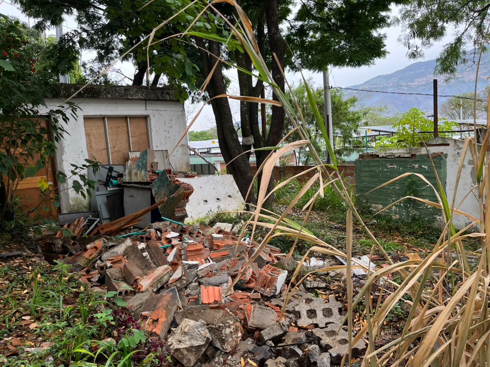

Condición Insegura

1. Cables Eléctricos Expuestos y Sobrecargados
Aulas de Informática y Electrónica - CTGI
Cableado eléctrico en el piso sin canaleta de protección, conexiones improvisadas y multitomas en cadena que pueden generar cortocircuitos o tropezones.
Medida Preventiva / Correctiva:
Canalizar el cableado mediante canaletas de pared o piso tipo Daisa y realizar mantenimiento preventivo del sistema eléctrico.